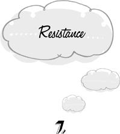

{% include JB/setup %}
{% raw %}
<div>

<h1 id="filepos115832" class="calibre19"><span class="calibre20"><span class="bold"><a class="calibre21"></a><a class="calibre21"></a></span></span></h1><div class="calibre16"> </div>
<p class="calibre22">                 <a class="calibre23"></a><a class="calibre23"></a>here are times when we’re called upon to change our course of action even though we are already usefully or pleasantly occupied. The fire alarm rings just as we get to the most exciting part of our book. We hear of an incredibly opportune one-day sale just as we settle down to an afternoon’s sunbathing. We spill our coffee all over the papers we were working on. The time has come to redirect our attention. If, at this juncture, we try to hold on to our old course, we fall into the trap of <em class="calibre9">resistance.</em></p>
<p class="calibre22">We’re grading <span><span class="calibre26">150</span></span> long and terrible essays on the administration of President James Buchanan. At the same time, we have to get to the store before it closes for an indispensable item. Without this particular object, we will be in serious trouble before the night is out. Closing time approaches as we draw near the end of our work. The structure of circumstances calls for our going to the store now, before it’s too late, and finishing the essays when we come back. One task can wait; the other can’t. But we have only five essays left. <a class="calibre23"></a>It would be such a relief to have the whole business over with and out of mind. We rush through two or three essays more, doing a terrible job, and finally see that we simply must break off. We make a desperate rush to the store. But it’s too late. We’ve resisted change, and now we have to pay the penalty.</p>
<p class="calibre22">There’s a close affinity between resistance and the trap of persistence. In both cases, we continue with what we’re already doing when it would be better to quit. In persistence, we ought to quit because the present activity has lost its value for us. In resistance, the present task does not lose its value; but we ought to quit anyway because something else more important or more pressing has come up. We persist if we continue to play a game that has become tedious. We resist if we continue to play when there’s a fire in the kitchen—even if the game remains interesting.</p>
<p class="calibre22">Both these traps are often set for us by our own mental inertia. Having begun something, we feel impelled to bring it to a conclusion even if its value is lost or exceeded by another alternative. This tendency to stay on the same track can be overcome if the new alternative is sufficiently potent. Fires, floods, and air attacks will bring most people’s <a class="calibre23"></a>ongoing projects to a halt. But the inertia of the old task biases our judgment of the optimal time to switch. The result is that we change over to the new course too slowly. When we finally stop grading and run to the store, it’s already too late.</p>
<p class="calibre22">Resistance is the let-me-just disease.</p>
<p class="calibre25">There are three conditions under which we should abandon the past and turn to a new future: (<span><span class="calibre26">1</span></span>) when delaying our entry into the new diminishes our fortune, (<span><span class="calibre26">2</span></span>) when delay causes us to miss a potential increment in our fortune, and (<span><span class="calibre26">3</span></span>) when the change to the new is in any case inevitable—that is, when we are visited by <em class="calibre9">emergencies, opportunities</em>, and <em class="calibre9">interruptions.</em></p>
<p class="calibre22">First, we should drop the task at hand when we’re faced with an <em class="calibre9">emergency.</em> The essence of an emergency is that if we don’t act immediately, we will suffer a penalty for the delay. It makes no difference that the present task is enormously important or that the emergency is very small. What’s at issue is only the effect of delay. It’s time to stop working on our symphony when the coffee begins to boil. The world can wait a moment longer for our symphony without suffering measurable harm. But the coffee won’t wait.</p>
<p class="calibre22"><a class="calibre23"></a>Of course, the task at hand may also be urgent. In that case it is itself an emergency, and we have to decide which of the two can least sustain a delay. It would be unwise to occupy ourselves with boiling coffee when we’re struggling with a masked gunman in the living room. The decision to stay on the same track isn’t always due to resistance. But if the old activity can be delayed without penalty and the new one can’t, it’s a trap not to switch.</p>
<p class="calibre22">Second, we should drop the task at hand when <em class="calibre9">opportunity</em> comes knocking. In a frenzy of determination, we finally set out to wash all the windows in the house. Halfway through the job, we’re invited to an impromptu get-together with our friends. There’s no particular reason why the windows should be finished today rather than tomorrow or next week. But the get-together is only today. It’s an opportunity. In this instance we have a lot to gain and nothing to lose by changing course. If we opt to finish the windows today, simply because they were begun, we forgo a pleasure for no purpose.</p>
<p class="calibre22">Naturally, freedom from resistance is not a guarantee that opportunities will never again be missed. We may have to decline a sudden and <a class="calibre23"></a>attractive invitation if it will cost us our job to accept. But it’s pointless to let opportunity slip away when the present task can be postponed without cost.</p>
<p class="calibre22">We’re not likely to forgo opportunities that are very large and obvious. But our reluctance to change course often causes us to miss little pleasures. We won’t stop to look at a sunset until we’ve finished our work—and then it’s too late. Even when the opportunity <em class="calibre9">is</em> large and obvious, we don’t make a transition to it without wasteful effort. We have to tear ourselves away from our half-finished accounts to leave for the rendezvous of our dreams.</p>
<p class="calibre22">It’s curious that we should experience any difficulty at all in harvesting an obvious benefit. Our reluctance to face the unpleasantness of an emergency is understandable enough. But mere aversion to unpleasantness can’t explain our hesitation in the face of opportunity. It seems that we’re unconditionally averse to change itself, whether it’s for the worse or for the better. But this is only another way of saying that we suffer from mental inertia.</p>
<p class="calibre22">Third, we should drop the task at hand when we’re visited by an imperative <em class="calibre9">interruption.</em> The <a class="calibre23"></a>doorbell rings just as we sit down to watch the evening news. We know that a change of course is inevitable. We surely <em class="calibre9">will</em> answer the door. We don’t seriously consider rejecting the new course. And yet we resist it. We glare at the door and heap maledictions upon it. We delay entering into our new condition even though we can no longer abide in the old. All of this is wasted time and energy.</p>
<p class="calibre22">This isn’t to suggest that we should, like a leaf in the wind, accede to every external demand for our attention. The traveling salesman does not always require a full hearing. What matters is the <em class="calibre9">irresistibility</em> of the demand. Like everything else, irresistibility is relative to the observer. We can always elect not to answer doorbells and telephones, toss out talkative bores, stay in the race with a broken leg, ignore the cries of a drowning child. But if, for whatever reason, we know that we will not repudiate a call to the new, we might as well stop what we’re doing without a fuss. It’s irrelevant that our work is enormously important or that the interruption is trivial. If we surely <em class="calibre9">will</em> be interrupted, we might as well make the transition gracefully. It’s pointless to struggle without a hope of victory.</p>
<p class="calibre22"><a class="calibre23"></a>Resistance to interruptions is the easiest of all mental traps to detect in everyday life. We’re always acutely aware of interruptions when they occur, for otherwise they would fail to interrupt us. Thus the occasions upon which we are liable to resist them are clearly signaled beforehand. This makes every interruption into an especially valuable opportunity to practice the skill of not getting trapped. The ring of the doorbell at news-time and the alighting of a talkative bore in the middle of our work provide us with indispensable first exercises in self-improvement. If we remember this beneficial side of interruptions, we will greet them with an openness that already precludes resistance.</p>
<p class="calibre22">The occasions for resistance are greatly increased by certain forms of prior anticipation. When we fall prey to one-step anticipation and needlessly decide what we will be doing next, our decisions are often undone by unexpected circumstances. Having resolved to spend the evening with a book, we’re descended upon by the proverbial bore. The work that went into making the decision was in vain. Nevertheless, a decision was made. We <em class="calibre9">were</em> to have read a book. Hence the bore is not only unexpected and <a class="calibre23"></a>unpleasant—he’s also an interruption. Even if we haven’t yet begun to read, we have to tear ourselves away from the <em class="calibre9">idea</em> of reading this evening. Had we made no plans for the evening, the arrival of the bore would still have been unfortunate. But we would be spared the trouble of canceling a commitment that we made to ourselves. Hence there are at least two reasons for not making plans unless they fulfill a definite need: (1) we waste the time it takes to make them, and then (<span><span class="calibre26">2</span></span>) they cause us to resist unexpected turns of fate.</p>
<p class="calibre22">The champion among makers of useless plans is the vertical anticipator, who strives to work out what he will be doing for the rest of his life. We’ve already seen that such monumental overplanning is continually being rendered obsolete by unexpected developments. In addition, vertical anticipation engenders continual resistance to the new. When we have a plan for every moment of every day, no person or process in the world can ever take the initiative toward us without our construing it as an interruption. The more specific our plans, the more passive and mechanical we require the world outside ourselves to be. Having written the script for our conversation with a potential date, we require him or her to deliver <a class="calibre23"></a>the proper lines at the proper time, like a phonograph record. If the opening joke is met with a solemn reply, we’re lost.</p>
<p class="calibre22">When we carry around a scenario for the rest of our life, we’re always busy tearing ourselves away from it.</p>
<p class="calibre22">Resistance in its turn fosters fixation, that is, waiting around until we can resume a blocked activity. One of the reasons we don’t take up something new in these circumstances is that the resumption of the old activity may come upon us suddenly and interrupt our new beginning. If we start to read an interesting article while waiting for our guests, they may arrive before we’ve finished, and then we’ll have to tear ourselves away. By remaining on the same course now—by fixating on the guests’ arrival—we avoid the strain of changing back to it in the future.</p>
<p class="calibre22">But the change needn’t be strenuous. We need only put down the article and go to the door. So long as we don’t uselessly resist change, we are none the worse for having begun something that can’t be finished right away. Half an interesting article is still better than twiddling our thumbs.</p>
<p class="calibre22">In this situation, the fear of a future bout of resistance leads to a present fixation. In the <a class="calibre23"></a>previous section, we saw that resistance was itself encouraged by anticipation. Causal connections of this kind are widespread among mental traps. One trap always seems to lead to another, and the second to a third. Conversely, the elimination of one trap generally helps us to combat several others. We will encounter more of these interconnections in future chapters.</p>
<p class="calibre25">In many ways, resistance is the very opposite of anticipation. The occasion for either trap is a choice between perpetuating the past and moving into a new future. There’s no generally valid solution to this conflict between the two temporal kingdoms. If we barrel into the future too soon, we are anticipating. If we hold back and stay too long with the past, we resist. Anticipating our departure on a trip, we arrive at the airport too soon and must sit and wait. Resisting our departure because we want to finish tidying up before we leave, we arrive too late and miss our flight. The course of events proceeds at its own pace. Whether we get ahead of the Universe or lag behind, we stumble and fall.</p>
<p class="calibre22">We’ve already seen that these contrary impulses—anticipation and resistance—often <a class="calibre23"></a>coexist in a single individual. We <em class="calibre9">resist</em> every deviation from our <em class="calibre9">anticipated</em> scenario for the future. There’s something of a paradox here. How can one and the same breast harbor both the tendency to delve too soon into the future and the inclination to cling too long to the past? In fact, these impulses are both aimed at the same effect: the eradication of the unexpected. In anticipation, we banish the unexpected by prematurely settling the course of future events. In resistance, we ward off the unknown future altogether by perpetuating the familiar conditions of the past. Evidently, we operate under the assumption that our control over the reins of destiny should be as tight as possible. The same idea leads, on a societal level, to our indiscriminate appetite for central planning and technological development.</p>
<p class="calibre22">A moment’s reflection is enough to see that the validity of this assumption can’t be taken for granted. Our life isn’t always more fortunate when everything proceeds according to plan. Some surprises turn out well. Resentfully dragging ourselves away from the evening news, we have a delightful evening with an old friend. Our clamber up the ladder of success is brought to a halt by illness, and we find the mental space to <a class="calibre23"></a>review our life and emerge with deeper values. Alternatively, our clamber up the ladder of success proceeds exactly as planned; and we wake up one day to find our children grown before we ever had a chance to play with them. If only their interruptions of our important work had been more effective!</p>
<p class="calibre22">The forces that shape our destiny are infinitely complex. Our plans and decisions are therefore always based on radically incomplete information. Nevertheless, we’re often required to make plans. But there’s no advantage to making an indiscriminate habit of it, as though proceeding according to plan were an intrinsic good. If the Universe should pull the reins from our hand by visiting us with the unexpected, there’s no immediate cause for sorrow. The track record of the Universe is at least as good as our own. A life in which we are always having to react to unforeseen developments is not necessarily less happy or less creative than a life of total self-direction. Even if both lives resulted in equivalent outcomes, the former would have the advantage of sparing us the burden of deciding. With the Universe at the reins, we can relax and enjoy the ride.</p>
<p class="calibre22"><a class="calibre23"></a>The assumption that things always go better when we consciously determine their course finds its quintessential expression in the enthusiasm for biofeedback. How delighted we are at the prospect of controlling our gastric secretions by an act of will! We don’t question whether we can do a better job of it than our autonomic nervous system. But what’s the basis for this confidence? Has willful direction been so remarkably successful in the rest of our life that we’re ready to entrust our stomach to it?</p>
<p class="calibre22">In reality, of course, this striving to extend our control to the furthermost reaches of space and the innermost recesses of our own bodies stems not from confidence in our abilities so much as from a fear of the unexpected. But the unexpected is neither good nor bad. It’s another dimension of life entirely. Its elimination may be likened to the extinction of a species or the abolition of the experience of color. If we succeed in scrubbing the world clean of surprise, we will be left with a fragment of our former life.</p>  <div class="mbppagebreak" id="calibre_pb_18"></div></div>

{% endraw %}

